NVIDIA 研究 → 产品转化管道
学术界如何驱动 NVIDIA 技术生态系统 (2020-2026)
方法论与范围
1.1 数据范围
本报告通过三个相互关联的数据源分析 NVIDIA 的研究到产品转化管道：
| 数据源 | 描述 | 覆盖范围 |
|---|---|---|
| 研究论文 | 从 research.nvidia.com 抓取的论文，标注了研究领域、发表 venue 和作者所属机构 | 891篇论文 (2020-2026)，标签 nvidia-research |
| 技术博客 | 通过 NVIDIA 技术博客 Atom feed 发现的所有文章 | 3,678篇文章 (2020-2026) |
| 转化证据 | 经过智能体内容审核验证的论文-博客匹配 | 56篇论文 → 53篇博客 → 71条已验证链接 |
论文覆盖31个研究方向，映射至14个领域。以 GPT 时刻（2022年末）为时间分界线：GPT前（2020-2022）vs GPT后（2023-2026）。
1.2 如何界定产品转化
核心方法论挑战在于区分真正的研究到产品转化与单纯的研究者可见度。我们采用三阶段过滤管道：
→ 442个候选配对
→ 69篇论文通过
→ 56篇验证论文
1.3 为什么这套方法有效
三阶段设计解决了根本性的信噪比问题。作者姓名重合非常常见——频繁撰写博客的 NVIDIA 研究者会产生数百个假阳性关联。标题短语匹配虽罕见但可靠：当一篇博客包含论文标题中5个词以上的连续短语时，几乎可以确定它在讨论该论文。智能体审核解决剩余的边缘情况：会议新闻汇总（"NVIDIA在NeurIPS发表20篇论文"）、奖项公告和社区教程等偶然匹配论文标题的情况。
从442篇到56篇的7.9倍缩减不是数据损失——而是噪声剔除。这56篇论文代表了我们有直接博客证据支撑的、可辩护的研究到产品转化集合。
| 章节 | 内容 | 图表数 |
|---|---|---|
| 2. 领域全景 | 研究组合的构成与演变 | 5 |
| 3. 学术合作 | 谁主导研究、顶尖合作伙伴、各领域参与度 | 4 |
| 4. 产品转化 | 已验证的转化证据、产品、学者、趋势 | 5 |
| 5. 研究者画像 | 顶尖转化学者：所属机构、研究成果、影响力 | — |
| 6. 产品转化故事 | 深度分析：Isaac、开发者工具、NeMo、CUDA+GPU | — |
| 7. GPT时刻转变 | 2022年前后各维度的对比 | — |
| 8. 关键结论 | 综合与启示 | — |
领域全景
2.1 研究组合构成
NVIDIA 的研究组合横跨14个领域。AI与机器学习以451篇论文占据主导——超过排名其后两个领域的论文之和。
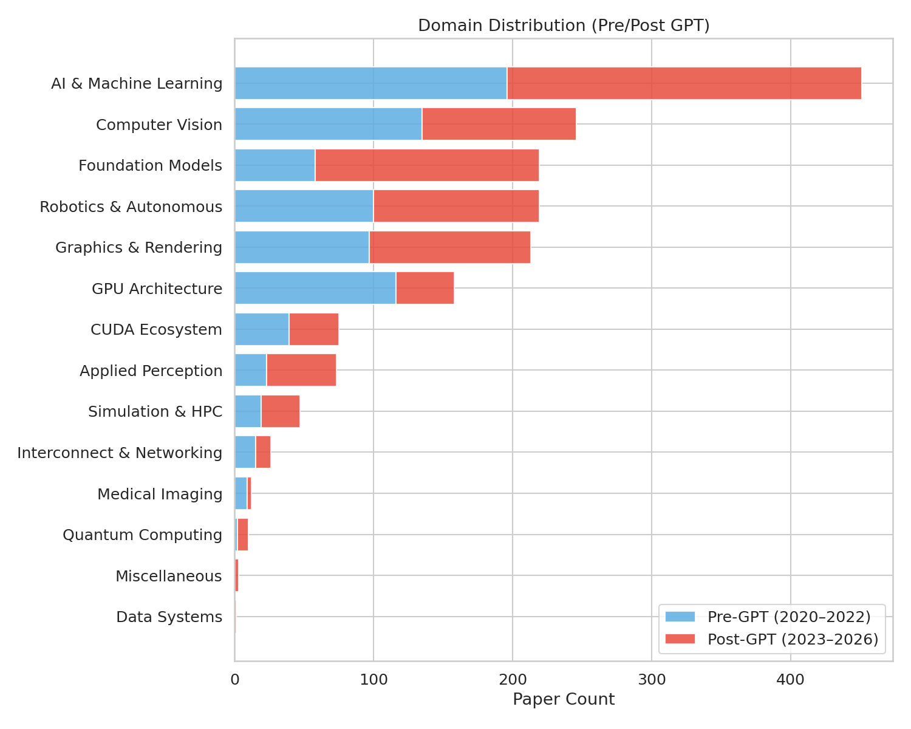
| 领域 | 论文数 | 占比 |
|---|---|---|
| AI 与机器学习 | 451 | 50.6% |
| 计算机视觉 | 246 | 27.6% |
| 基础模型 | 219 | 24.6% |
| 机器人与自主系统 | 219 | 24.6% |
| 图形与渲染 | 213 | 23.9% |
| GPU 架构 | 158 | 17.7% |
| CUDA 生态 | 75 | 8.4% |
| 应用感知 | 73 | 8.2% |
| 仿真与高性能计算 | 47 | 5.3% |
| 互联与网络 | 26 | 2.9% |
论文可归属于多个领域；百分比之和超过100%。
2.2 时间演化
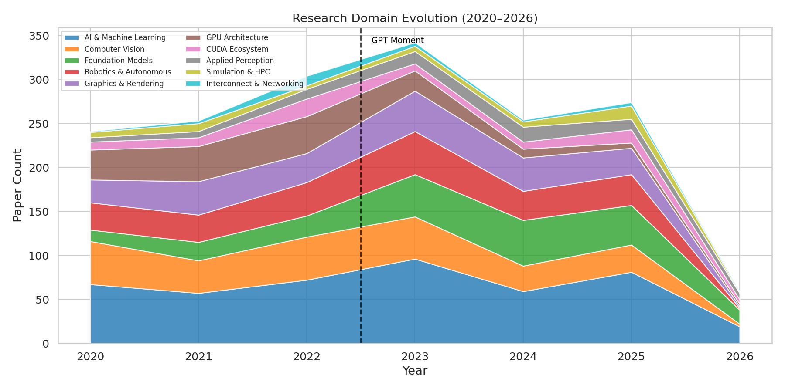
2022年末之后，领域格局发生了剧变。基础模型从GPT前的58篇飙升至GPT后的161篇（+178%）。GPU架构则呈现镜像走势——从116篇下降至42篇。第2.5节的分析表明，这种下降与论文更多转向 arxiv 而减少传统架构会议投稿相关；这究竟反映投入减少、发表策略变化还是分类调整，仅从数据本身无法区分。
2.3 各领域的GPT时刻转变
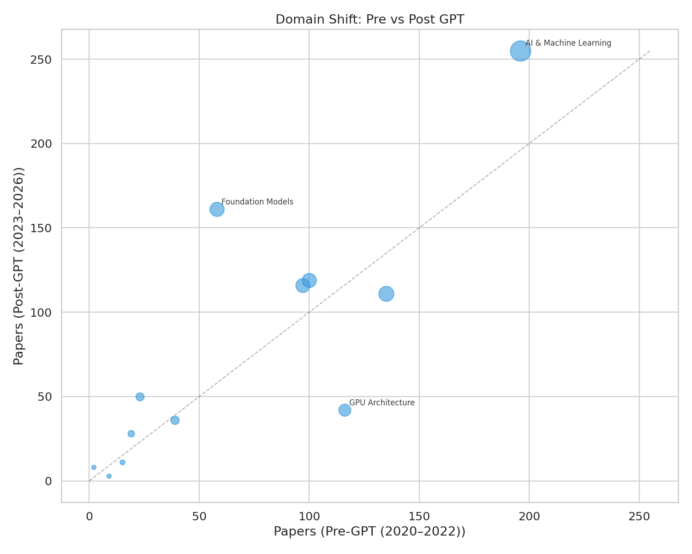
基础模型在两个时期之间净增103篇论文——是最大的单领域变化。应用感知也显示出强劲增长（+117%），主要由延迟感知和电竞研究驱动。GPU架构是最显著的下降者（-64%），同时CUDA生态的工作也有适度缩减。
2.4 关键领域轨迹
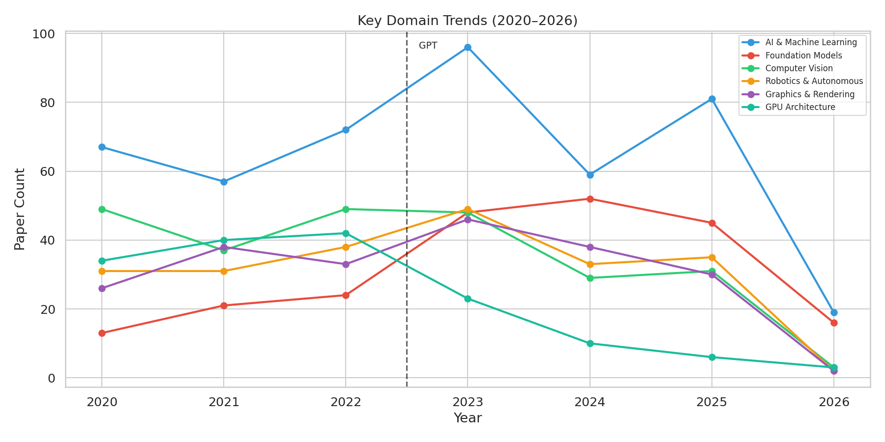
基础模型 ↗
冰球杆曲线——2020-2022年持平，随后陡升至每年45-52篇
GPU 架构 ↘
2020-2022年高峰期（每年40-42篇），随后急剧降至6-23篇
AI与ML、CV、图形学 →
稳健、坚实——构成NVIDIA的研究基石
机器人学 →
各年度持续稳定，无明显波动
2.5 Venue × 领域全景
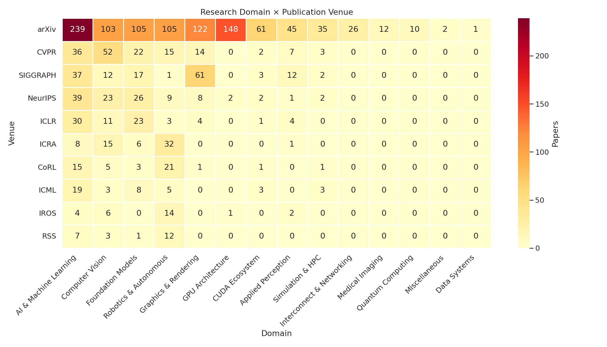
NVIDIA 每个领域有各自独特的发表venue集群：AI与ML集中在NeurIPS和ICML，计算机视觉在CVPR和ICCV，图形学在SIGGRAPH，机器人学在CoRL和ICRA。GPU架构因其对arxiv的依赖而独树一帜——2022年后在传统架构会议上的发表显著减少。
学术合作
3.1 谁主导？
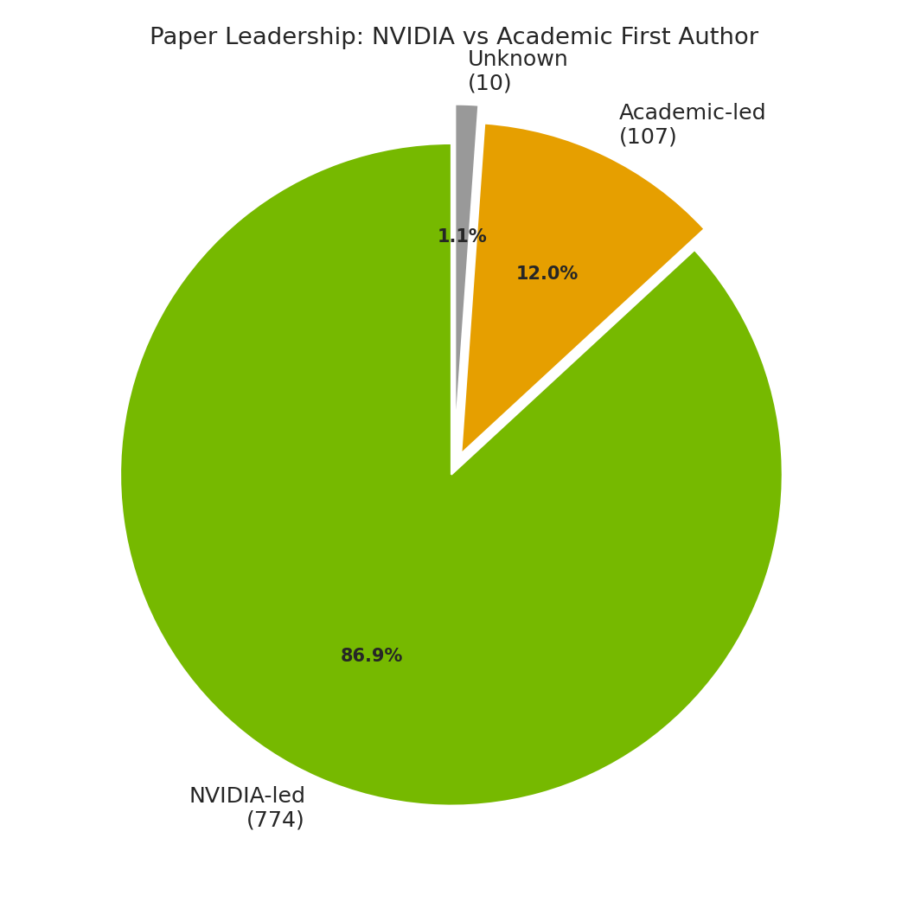
仅72篇论文（8.2%）为纯NVIDIA作者、没有外部合作者——绝大多数论文都有学术合作伙伴参与，但NVIDIA在绝大多数情况下主导研究议程。
3.2 时间稳定性
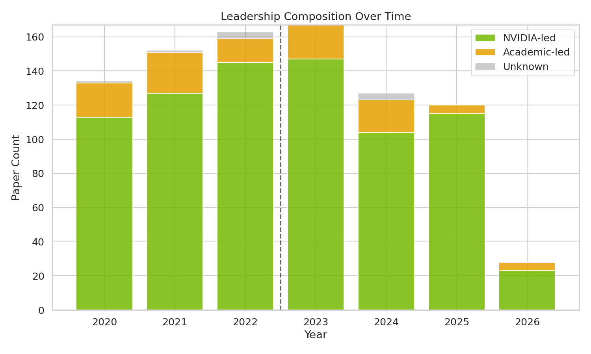
NVIDIA主导与学术界主导的比例在全部七个年度中保持稳定。这种合作模式是结构性和制度化的——不是对AI趋势或GPT时刻的应激反应。
3.3 各领域参与度
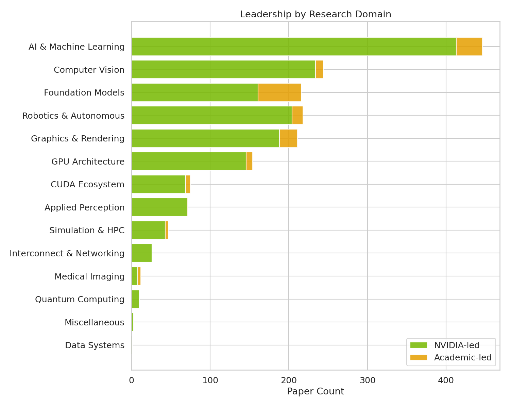
| 领域 | 学术界主导比例 |
|---|---|
| 医学影像 | 33.3% (4/12) |
| 基础模型 | 25.1% (55/219) |
| 图形与渲染 | 10.8% (23/213) |
| 仿真与高性能计算 | 8.5% (4/47) |
| CUDA 生态 | 8.0% (6/75) |
基础模型是学术界最具实质性主导地位的领域——219篇论文中有55篇的学术第一作者。应用感知、互联与网络以及量子计算领域零篇学术主导论文；NVIDIA完全掌控这些研究方向。
3.4 顶尖学术合作伙伴
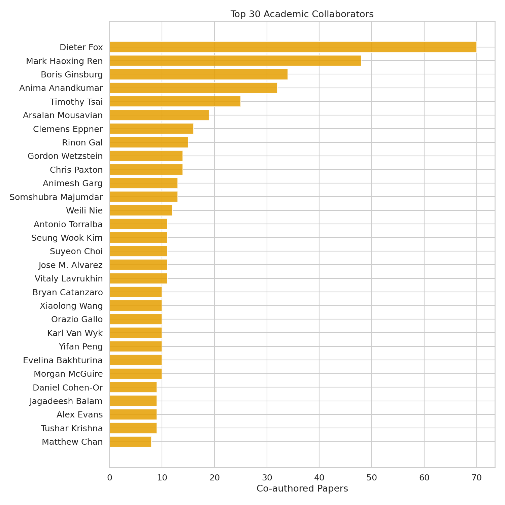
| 学者 | 论文数 | 主要领域 |
|---|---|---|
| Dieter Fox | 70 | 机器人学 |
| Mark Haoxing Ren | 48 | AI 与 ML |
| Boris Ginsburg | 34 | 基础模型 (语音) |
| Anima Anandkumar | 32 | AI 与 ML |
| Timothy Tsai | 25 | AI 与 ML |
产品转化
4.1 转化概览
经过校准，891篇论文中有56篇（6.3%）具有通过NVIDIA技术博客验证的产品转化。虽然这个数字看似不高，但它代表了已记录、可辩护的转化——是冰山一角而非研究到产品转化的全貌。

| 指标 | GPT前 (2020-2022) | GPT后 (2023-2026) |
|---|---|---|
| 有转化的论文 | 16 | 40 |
| 转化率 | 3.6% | 9.0% |
| 直接转化 (DIRECT) | 11 | 29 |
| 关联转化 (MODERATE) | 5 | 13 |
GPT后时期的转化率提升了2.5倍——更多研究通过博客渠道与产品建立连接。
4.2 各领域转化
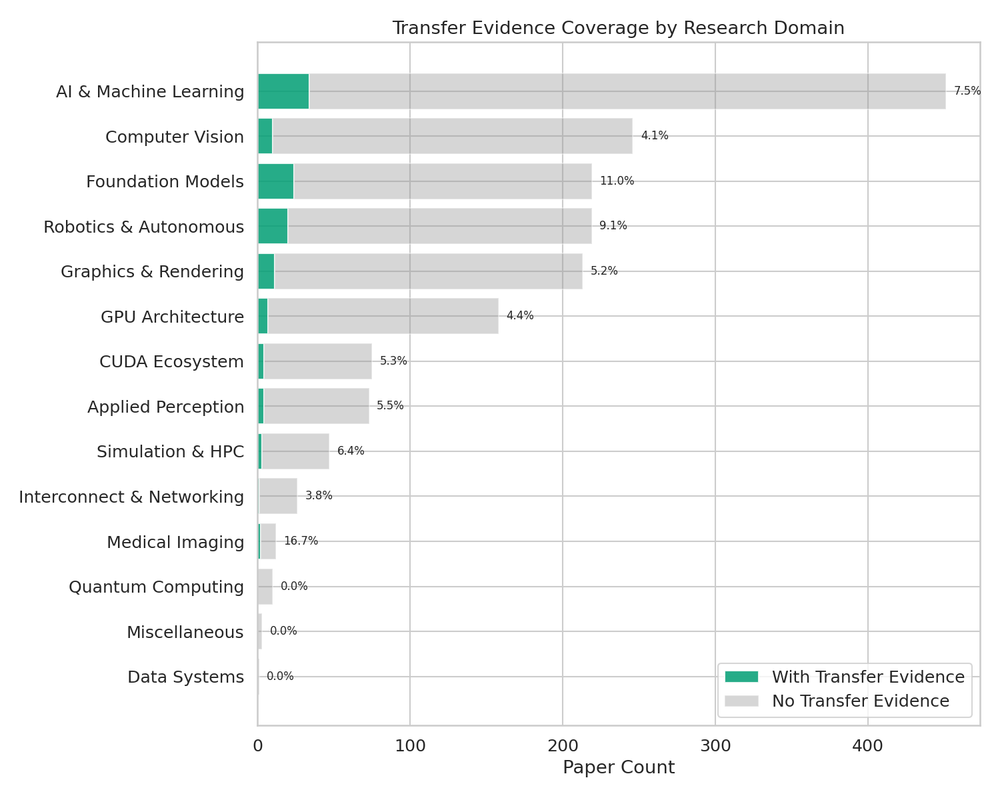
基础模型具有最高的绝对转化数（24篇论文），在主要领域中转化率也最高（11.0%）。医学影像总体转化率最高（16.7%），但基数很小（2/12篇）。GPU架构虽有158篇论文，但验证转化为零——GPU研究悄然出货。
4.3 产品版图
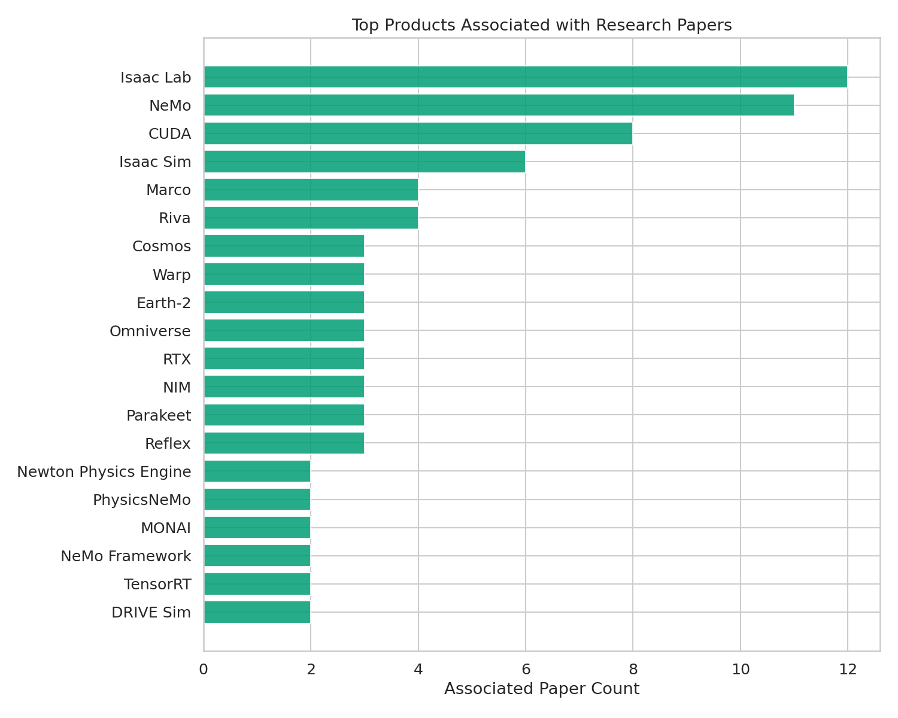
四个生态系统主导已验证转化：
| 生态系统 | 论文数 | 关键产品 |
|---|---|---|
| Isaac | 16 | Isaac Lab (12), Isaac Sim (6), Isaac Gym, Isaac ROS, GR00T |
| NeMo | 12 | NeMo (11), Parakeet, SteerLM, Megatron-Core, Minitron |
| 开发者工具 & CUDA | 23 | CUDA (8), Warp (3), Riva (4), TensorRT (3), Kaolin, Sionna, Reflex, Marco, RTX |
| Omniverse/DRIVE | 4 | Omniverse (3), DRIVE Sim (2) |
生态系统间存在重叠：4篇论文同时出现在开发者工具和Isaac中，4篇同时出现在开发者工具和NeMo中。去重后共43篇。其余13篇分布在 Earth-2 (3)、医学AI (4) 和独立转化中。
4.4 时间转化趋势
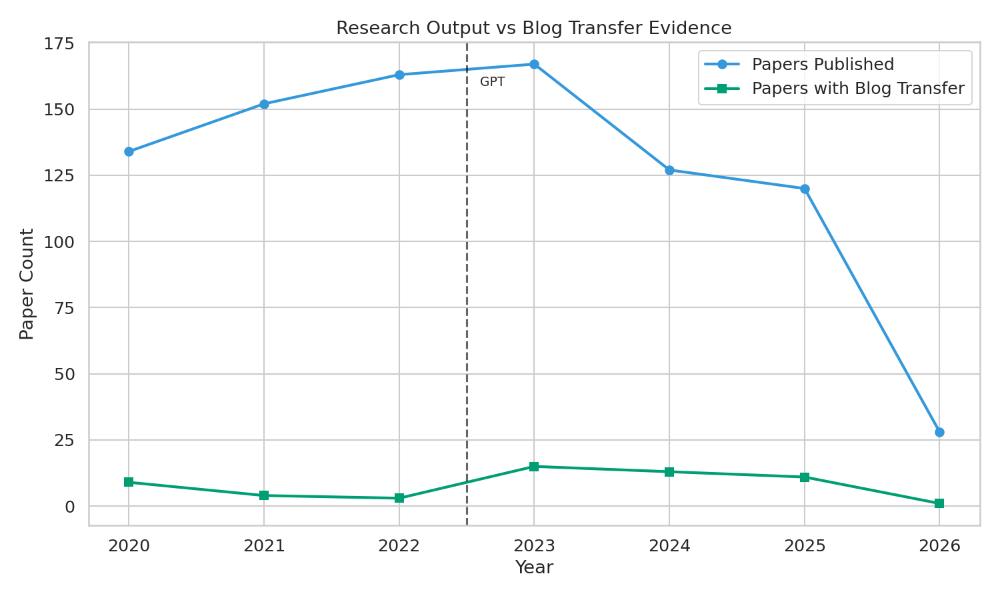
已验证转化显示出明显的GPT后加速：GPT前16篇 vs GPT后40篇。2023年的峰值（18篇论文）与基础模型和LLM相关转化的初始浪潮相吻合。2025年保持了16篇的势头。
4.5 转化学者
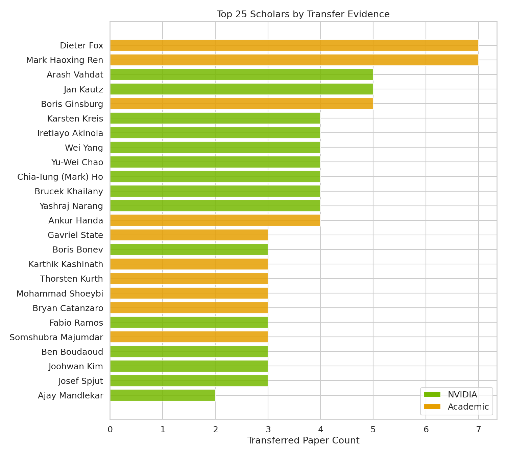
顶尖已验证转化学者由学术合作者和NVIDIA研究者混合组成。第5章提供详细的个人画像。
研究者画像
56篇已验证论文转化集中在一小群研究领袖周围。以下是前10位转化贡献者的画像——他们是谁、从事什么研究、以及他们的研究如何触达产品。
- arxiv-2957 (2020) 面向反应式物体交接的人手抓取分类 → Isaac, CUDA
- arxiv-2771 (2022) Factory — GPU原生SDF碰撞检测，20,000倍加速 → Isaac Gym, PhysX
- arxiv-2665 (2023) DeXtreme — 域随机化灵巧手训练 → Isaac Gym, Omniverse Replicator
- rss-0011 (2023) IndustReal — 接触密集型装配的仿真到真实迁移 → Isaac Lab, Isaac ROS
- rss-0004 (2024) AutoMate — 通用化装配策略 → Isaac Sim, Isaac Lab
- corl-0008 (2024) SkillGen — 自动化演示生成 → Isaac Lab
- corl-0001 (2025) VT-Refine — 视觉-触觉双臂装配 → Isaac Lab, Warp, Newton
Fox提供总体研究领导力。每篇论文先发表于顶级venue（RSS、CoRL、NeurIPS），再进入产品集成——这是一种先学术验证、再产品化的审慎策略。
- ispd-0003/0005 (2023) DREAMPlace/AutoDMP — GPU加速宏单元布局 → DREAMPlace, CUDA
- arxiv-2641 (2023) ChipNeMo — 芯片设计领域适配LLM → NeMo
- arxiv-2585 (2024) DRC-Coder — 自动化设计规则检查 → Marco
- arxiv-2596 (2024) VerilogCoder — 自主Verilog生成 → Marco
- arxiv-2611 (2024) LLM驱动标准单元布局优化 → Marco
- arxiv-2552 (2025) Marco — 可配置多智能体框架 → Marco
全部为MODERATE转化——输入NVIDIA内部芯片设计工具链。Chia-Tung (Mark) Ho作为第一作者主导实现。
- neurips-0045 (2021)、iclr-0033/0034 (2022) 基于分数的生成模型、扩散——被"改进扩散模型"博客系列引用 → MODERATE
- arxiv-2522 (2026) Proteina-Complexa — 蛋白质结合剂设计 → Proteina-Complexa, BioNeMo
与Karsten Kreis和Jan Kautz组成NVIDIA核心生成式AI三人组。2026年的Proteina-Complexa论文代表了最新的研究到产品类型：生成模型应用于药物发现。
- arxiv-2971 (2020) UNAS — 神经架构搜索 → TensorRT, CUDA
- arxiv-3003 (2020) Bi3D立体深度估计 → A100 GPU
- arxiv-2614 (2024) Mamba-2-Hybrid 状态空间模型 → NeMo, Megatron-Core (1个月转化周期)
- arxiv-2594 (2024) Minitron — LLM剪枝/蒸馏 → NeMo, TensorRT-LLM
研究组合横跨CV、NAS、SSM架构和LLM压缩——反映了对NVIDIA学习研究全领域的覆盖。Mamba-2-Hybrid实现了数据集中最快的转化周期：从arXiv到NeMo集成仅1个月。
- arxiv-3026 (2020) 跨语言ASR迁移学习 → NeMo 快速启动训练
- arxiv-2674 (2023) Fast Conformer — 训练速度提升2.8倍 → NeMo Canary
- arxiv-2677 (2023) TDT — token与持续时间联合预测传感器 → NeMo Parakeet-TDT
- arxiv-2645 (2023) 长音频ASR → NeMo Parakeet
- arxiv-2629 (2024) ASR置信度估计 → NeMo
语音研究在1-12个月内持续落地到NeMo。合作者Somshubra Majumdar、Jagadeesh Balam和Vitaly Lavrukhin构成NeMo语音核心团队。
去噪扩散GAN（iclr-0034）的第一作者。与Vahdat和Kautz共属NVIDIA生成式建模团队。全部四篇论文被NVIDIA两篇"改进扩散模型"博客系列引用。
IndustReal（rss-0011）和AutoMate（rss-0004）的第一作者。专注接触密集型装配的仿真到真实迁移。全部四篇论文为DIRECT转化进入Isaac生态系统。与Dieter Fox和GEAR团队密切合作。
人-机器人交接研究（arxiv-2957）和SynH2R（icra-0004）的第一作者。桥接计算机视觉与机器人学——手-物体交互、双臂装配。全部论文转化至Isaac Lab。
Dexplore（corl-0002）和SKT-Hang（icra-0005）的第一作者。研究语义关键点用于任务理解和灵巧操控的可扩展控制。全部论文转化至Isaac Lab。
全部4篇论文的第一作者。NVIDIA Marco多智能体芯片设计框架的首席架构师。论文形成连贯序列：DRC检查 → Verilog生成 → 单元布局 → 统一Marco框架。全部为MODERATE——研究输入内部设计自动化。
跨领域模式
合作集群
三个紧密的研究团队主导转化：机器人仿真到真实迁移团队（Fox、Akinola、Yang、Chao）、生成式AI团队（Vahdat、Kreis、Kautz）和芯片设计团队（Ren、Ho）。Boris Ginsburg的语音团队最为独立自洽。
学术-产业双重性
前十名中的三位（Fox、Ren、Ginsburg）被归类为学术界，但实际担任NVIDIA研究领导角色。他们转化的论文模糊了学术发表与产品开发之间的界限。
第一作者动态
Mark Ho以第一作者身份完成其全部4篇论文——是实施主导者。Fox、Kautz和Ginsburg担任通讯/末位作者——是研究总监。Vahdat、Kreis、Yang和Chao在合作论文中共享第一作者身份。
产品转化故事
6.1 Isaac 生态系统 16篇论文
Isaac生态系统是NVIDIA的机器人AI开发平台，按照从仿真到训练再到部署的层次组织。它是已验证研究转化的最大接收方——16篇论文注入8个不同的Isaac产品。
架构概览
| 层次 | 产品 | 角色 | 研究输入 |
|---|---|---|---|
| 仿真 | Isaac Sim | 高保真数字孪生 | Factory的SDF碰撞检测 → PhysX (arxiv-2771) |
| 训练 | Isaac Lab | GPU加速RL/IL框架 | DeXtreme域随机化 (arxiv-2665), IndustReal阻抗控制 (rss-0011) |
| 训练（前代） | Isaac Gym | 独立GPU强化学习 | Factory并行环境, DeXtreme魔方旋转 |
| 部署 | Isaac ROS | ROS 2 感知 + 控制 | FoundationPose不确定性量化 (icra-0029) |
| 基础模型 | Isaac GR00T | 人形机器人基础模型 | GR00T N1双系统架构 (arxiv-2567), MaskedMimic (siggraph-0009) |
转化时间线——五个阶段
6.2 开发者工具 23篇论文
NVIDIA的开发者工具生态包含"水平"平台（CUDA、Warp、TensorRT——加速任意负载）和"垂直"工具（Sionna用于无线通信、Riva用于语音、Reflex用于游戏延迟、Marco用于芯片设计）。
CUDA与GPU：水平基座
A100 GPU赋能CV研究（arxiv-3003）：两篇CVPR 2020论文利用了新的Ampere特性——第三代Tensor Core配合TF32实现相比Volta最高10倍吞吐量提升；2:4结构化稀疏使推理的等效计算吞吐量翻倍。模式清晰：新GPU硬件 → 更大模型、更快迭代。UNAS通过TensorRT + CUDA（arxiv-2971）：神经架构搜索框架通过TensorRT部署，配合V100 GPU上的自动混合精度，实现16倍推理加速。
研究到库：论文成为SDK功能
Kaolin Library——arxiv-2604（2024）提供了Simplicits，一个处理网格、点云、高斯散射和NeRF的统一物理表示。变为 kaolin.physics API。Warp——Python中的GPU计算，横跨图形学、机器人学和物理学。Sionna → TensorRT → Aerial管道——神经接收器研究在Sionna中原型化，通过TensorRT硬化实现实时推理（A100上<1ms），最终进入Aerial（商用5G RAN）。
研究到产品：论文成为产品能力
Riva——Parakeet ASR、Canary多语种和Parakeet-TDT模型 → Riva生产部署。Reflex——对15,000+玩家在不同延迟条件下的研究；前10%玩家在25ms比85ms命中2倍以上目标。直接支撑了Reflex SDK的设计。Marco与DREAMPlace——LLM多智能体芯片设计框架（VerilogCoder达到94.2%基准成功率，MCMM实现约60倍人类加速）。
6.3 NeMo 生态系统 12篇论文
NVIDIA NeMo是一个三层平台：NeMo Framework（端到端LLM训练）、Megatron-Core（分布式大规模训练）和NeMo Curator（数据管道）。自2020年以来，已有12篇研究论文转化至这个生态系统。
ASR/语音：最长的管道
语音谱系始于arxiv-3026（2020年5月）——基于CTC的ASR跨语言迁移学习，与NeMo"快速启动训练"工作流同月发布。Fast-Conformer（arxiv-2674，2023年5月）通过新颖的下采样设计实现2.8倍训练加速；11个月后驱动了Canary模型。Token-and-Duration Transducer（arxiv-2677，2023年4月）演化为Parakeet-TDT——推理速度提升64%，成为HuggingFace Open ASR排行榜上首个突破7.0WER的模型。长音频ASR研究（arxiv-2645）在财报电话会议和演讲级音频上验证了Parakeet。
LLM优化：对齐、压缩、架构
SteerLM（arxiv-2644，2023年10月）用属性条件SFT替代复杂RLHF——用户可在推理时指定有用性/幽默感/创造力。43B模型在Vicuna上超越LLaMA-30B-RLHF。Minitron（arxiv-2594，2024年8月）系统化了LLM压缩——生成Minitron-8B、Mistral-NeMo-Minitron-8B（在9个基准上超越Llama-3.1-8B）。Mamba-2-Hybrid（arxiv-2614，2024年6月）——Mamba-2层在256K序列长度上快18倍；NeMo和Megatron-Core在一个月后即添加SSM支持——这是全数据集中最快的从论文到产品的转化。
| 年份 | 关键论文 | 产品集成 | 主题 |
|---|---|---|---|
| 2020 | arxiv-3026, arxiv-2962, arxiv-2965 | NeMo ASR, BioMegatron, LAMP/MONAI | 奠基：ASR迁移学习，生物医学NLP |
| 2023 | arxiv-2674, arxiv-2677, arxiv-2644, arxiv-2645 | Fast-Conformer, TDT, SteerLM, Parakeet | 语音架构重构，LLM对齐 |
| 2024 | arxiv-2614, arxiv-2594, arxiv-2629 | Mamba-2-Hybrid (1个月), Minitron, ASR置信度 | LLM架构创新，模型压缩 |
| 2025 | arxiv-2579 | NeMo Curator (Cosmos数据管道) | 大规模数据治理 |
6.4 CUDA + GPU：沉默的基座 8篇论文
CUDA和GPU硬件是其他所有NVIDIA产品的基础——但它们的每篇论文博客报道量最少。158篇GPU架构论文但零篇验证博客转化，8篇论文连接到CUDA/A100——这个生态代表了研究转化中"沉默"的一面。
为什么GPU架构零博客转化
GPU架构研究（158篇论文）发表在架构venue或arxiv上，然后在Blackwell、Hopper、Ampere等产品中出货——没有博客宣传。此处博客证据的缺失不代表转化的缺失。这反映了不同的沟通策略：硬件通过产品发布会和技术文档出货，而非研究博客。CUDA作为次级产品出现在每一个生态系统中——作为Isaac和NeMo负载的执行基座，作为DREAMPlace的加速核心。8篇将CUDA列为直接产品的论文远远低估了其实际影响。CUDA是水，不是鱼。
GPT 时刻转变
GPT前（2020-2022）与GPT后（2023-2026）对比：
| 维度 | GPT前 | GPT后 | 变化 |
|---|---|---|---|
| 规模 | 449篇论文 | 442篇论文 | 持平 |
| 组成 | 以硬件为中心 | 以模型为中心 | 基础模型 +178% |
| 合作模式 | 88% NVIDIA主导 | 87% NVIDIA主导 | 稳定 |
| 转化率 | 3.6% | 9.0% | +2.5倍 |
| 直接转化 (DIRECT) | 11 | 29 | +18 |
| 新增领域 | — | 杂项 (3), 数据系统 (1) | 初期多元化 |
综合解读
GPT时刻并未促使NVIDIA产出更多研究——而是促使NVIDIA产出不同的研究。449→442的论文数量基本持平。但在表面稳定的背后是彻底的重新分配：基础模型吸纳了103篇净新增论文，而GPU架构减少了74篇。这种转变不仅关乎主题，还关乎操作层面——基础模型研究通过博客以11.0%的转化率触达产品，而GPU架构在同一渠道的转化率为零。博客作为面向开发者的媒介，天然适合软件和模型发布；硬件则通过产品发布会和数据表出货。因此，GPT后转化率的提升（3.6% → 9.0%）部分是结构性的：更多研究现在落在博客友好的领域，同时NVIDIA在系统性报道研究到产品连接方面也更加成熟。稳定的合作比例（88% → 87% NVIDIA主导）确认了组织模式——NVIDIA设定研究议程，学术界提供专业知识和合作者——在GPT冲击下完好无损。
关键结论
附录：计划合规性检查
| # | 计划分析项 | 是否满足？ | 证据 |
|---|---|---|---|
| 1 | 领域静态分布 | ✓ 是 | 第2.1节 + 对应图表 |
| 2 | 含GPT划分的领域时间演化 | ✓ 是 | 第2.2节 + 对应图表 |
| 3 | CV/GPU/LLM 2022年后增长检查 | ✓ 是 | 第2.3节、第2.4节 |
| 4 | 纯NVIDIA vs 学术合作比例 | ✓ 是 | 第3.1节 |
| 5 | 第一作者学术主导细分 | ✓ 是 | 第3.1节 |
| 6 | 各领域学术参与度排名 | ✓ 是 | 第3.3节 |
| 7 | 顶尖合作学者 | ✓ 是 | 第3.4节 |
| 8 | 转化证据类型分布 | ✓ 是 | 第4.1节（已校准：DIRECT/MODERATE） |
| 9 | 具有产品足迹的论文数量 | ✓ 是 | 第4.1节：56/891 (6.3%) |
| 10 | 产品级映射（哪些产品） | ✓ 是 | 第4.3节 |
| 11 | 领域到产品落地分析 | ✓ 是 | 第4.2节（各领域转化率） |
| 12 | 学者对产品转化的贡献 | ✓ 是 | 第4.5节、第5章 |
全部12项计划分析以校准数据满足。